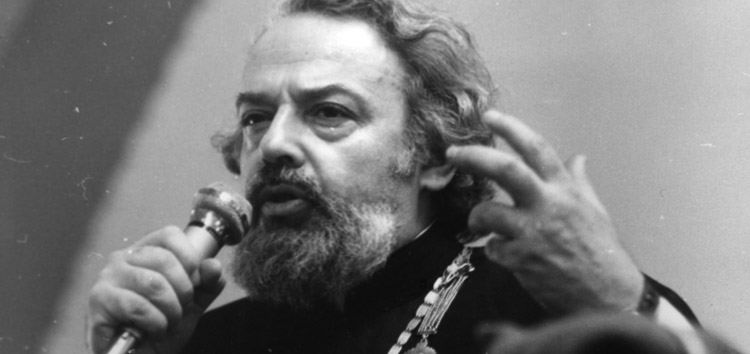
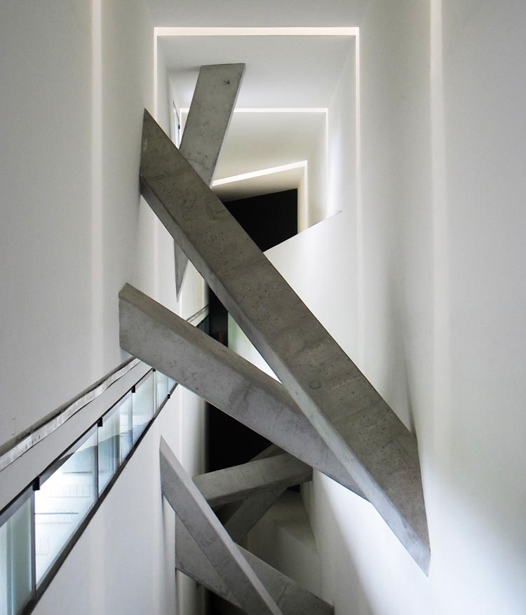
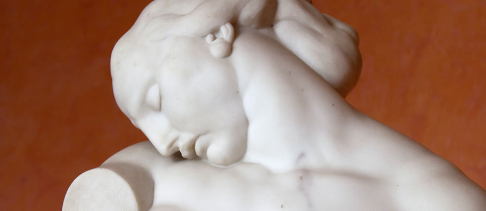
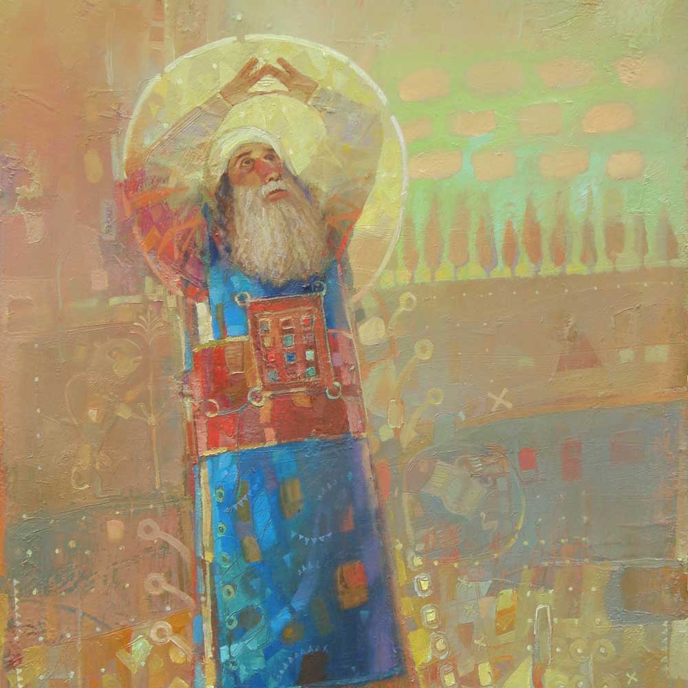
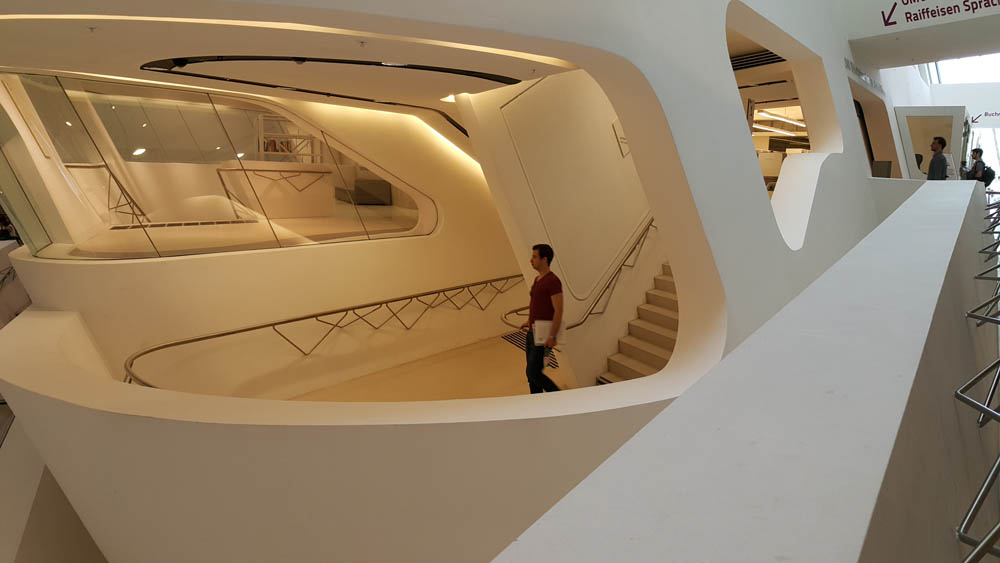
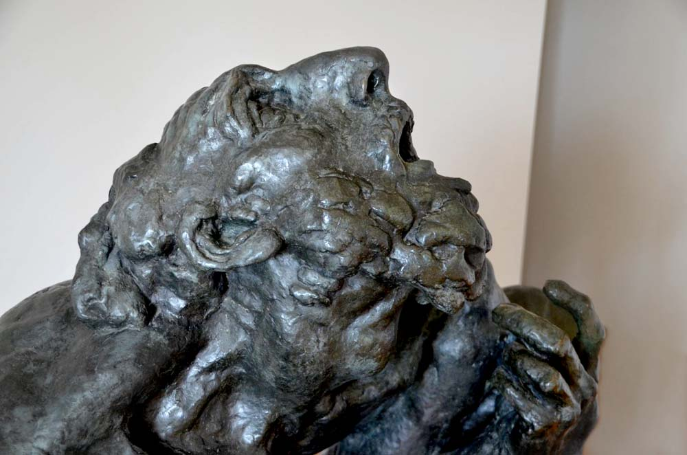
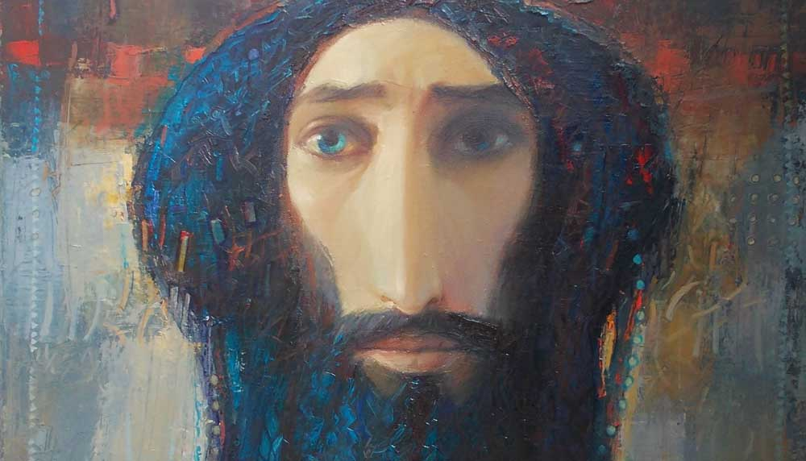

A Partner in God's Creativity. Alexander Men
In his book "The Meaning of the Creative Act" N. Berdyaev regards creativity as the chief distinguishing feature of man, "allowing him to break through this world to another world".
Author: Alexander Men, "The History of Religion", an excerpt from chapter 6, "Image and Likeness". Translated from Russian.

Composer: Daniel Kruglov. A musical reflection on the weekly Torah portions "Behar–Bechukotai"
Not in this, O Lord, are You mighty and beyond grasp
before my restless mind:
that on a starry day Your bright seraph
kindled a huge sphere above creation…
No, You are mighty and beyond my grasp
in this: that I myself, powerless and momentary,
carry in my breast, like that seraph,
a fire stronger and brighter than the whole universe.
A. Fet
"Man is created in the image and likeness of God": this is the essence of the biblical understanding of man.

To penetrate more deeply into the very essence of truly human creativity, it is best to turn to the testimony of the creators of cultural values themselves. They reveal to us the sense of participation in a higher spiritual being of which poets, writers and artists were clearly aware. Let us dwell on some examples of such self-testimony.
"Sometimes," writes N. O. Lossky, "in moments of the most fruitful thinking whole long chains of thought unfold as if by themselves."
Poets often describe the process of their creative work as something "given", something in which they play only the part of a spectator, a receiver.
The thinker and poet S. N. Bulgakov speaks of this even more definitely. In his words, "the element of talent directs the artistic attention… The human artist involuntarily becomes an appendage of his talent".

In his book "The Meaning of the Creative Act" N. Berdyaev regards creativity as the chief distinguishing feature of man, "allowing him to break through this world to another world". This is confirmed by the fact that creators are often unable to take in their own creation in all its fullness.
"Sometimes," writes the French psychologist H. Joly, "even the great man himself, looking at the horizons that his own idea opens before him, is struck with astonishment and admiration before it and believes that it has come down to him from above, from some invisible supreme power." We have countless examples of this. Thus Michelangelo, working on his frescoes, saw in this labour a sacred act directed by the Spirit of God.

In the words of G. Flaubert, artists are "the organs of God, through which He Himself reveals His essence"; Mickiewicz felt in his creative work "a power that does not come from people". Beethoven testified that in moments of musical illumination "God Himself spoke into his ear". Beauty, in the words of V. A. Zhukovsky, is "the soul's sensing and hearing of God in creation". "There were times," Leo Tolstoy writes in his Testament, "when I felt that I was becoming a conductor of the will of God."

Such testimonies could be continued endlessly. They show that in the process of creation a person comes into communion with the spiritual being of the world, and here his godlike nature shows itself with extraordinary power.
The value of every work of art lies above all in the fact that its author creates a new world of his own. Colours and forms, sounds and words become the language of the spirit.
It is no accident that creativity has a cosmic meaning for Christianity: in it man, as it were, continues the divine work of creation. This is no longer "Earth" or "Water" with their dark elemental life, but a conscious being creating his "second cosmos" and thereby taking part in the creativity of God.

That is precisely why the creative process is open to unlimited perfecting. That is precisely why every master, having finished his work, feels a dissatisfaction that drives him to new creative searching.

It has long been noticed that the characters of many writers are only reincarnations of one hero who seeks and does not find his final form. This also explains the leitmotifs in the works of artists: feeling the imperfection of what they have created, they cannot stop and rest on what they have achieved.
In the end, all our earthly creativity is a joy interwoven with a deep longing for perfection and the ideal. We feel in ourselves immense possibilities that we are not given to realise fully. The horizon and our aspirations are boundless, while human life is as short as a moment. This concerns not only creativity but also freedom and reason.

Composer: Daniel Kruglov. A musical reflection on the weekly Torah portion "Shemot"
Where does such a mismatch come from? Is it an irremovable tragedy of the spirit? If our attraction to truth, goodness and creativity had only an illusory basis, it would not take hold of a person with such force. Since these impulses have been put into us, they must have a possibility of being realised. Only in the perspective of the endless development of the human person, far beyond its present conditions of existence, does it find true space. Only then do reason, conscience, freedom and creativity not remain a useless advance, but lead the person to the heights of true likeness to God. In other words, the question of man's possibilities is the question of his immortality.
For the notes to the text see here (in Russian): chapter six, "Image and Likeness".
 Jewish Images in the Work of the Catholic Artist Józef Regula
Jewish Images in the Work of the Catholic Artist Józef Regula Contemporary Artists Interpret the Passover Haggadah
Contemporary Artists Interpret the Passover Haggadah Prospects for Israeli Fashion
Prospects for Israeli Fashion